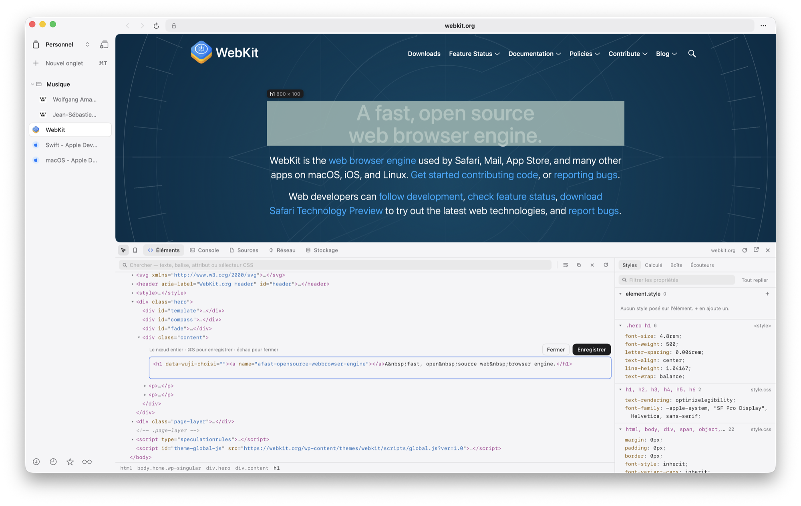
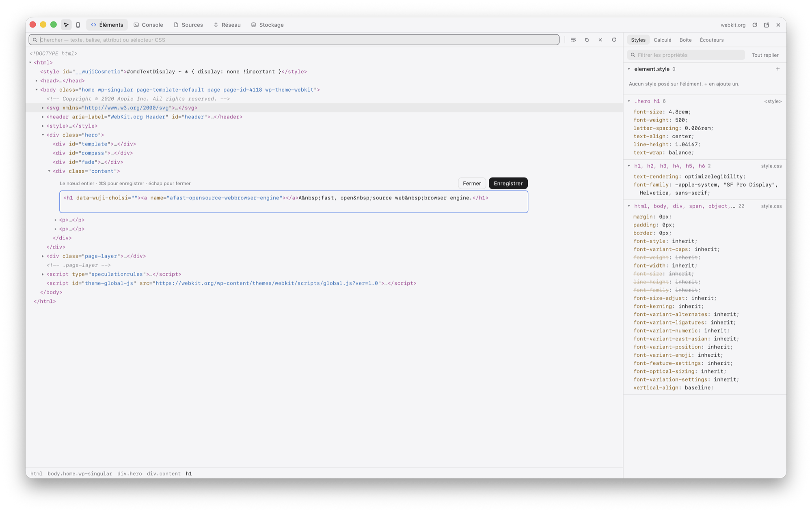
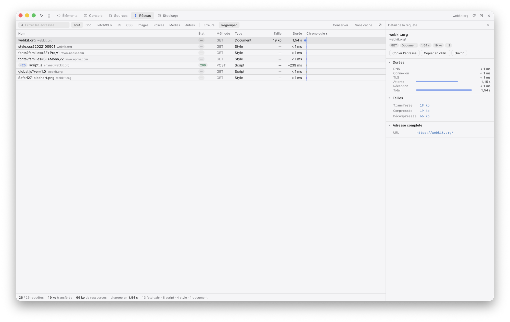
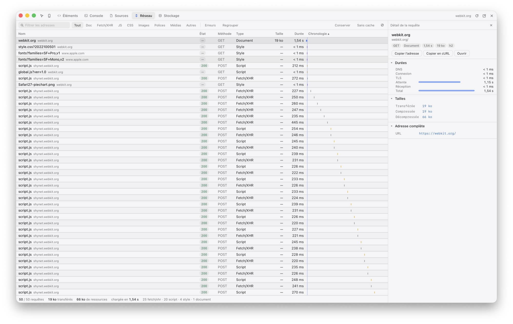
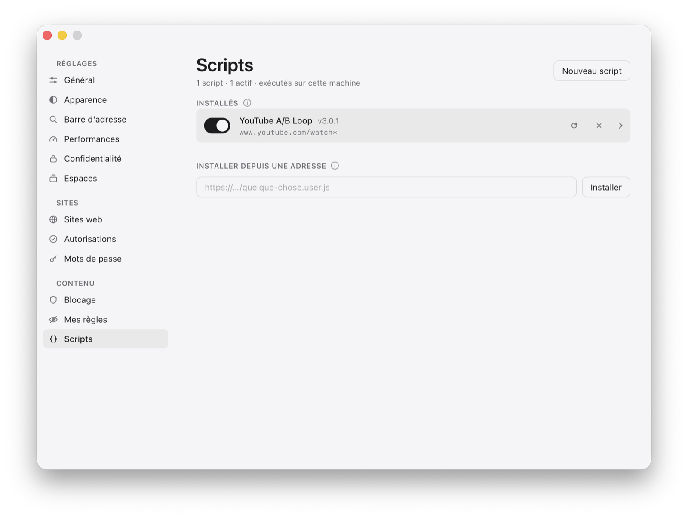
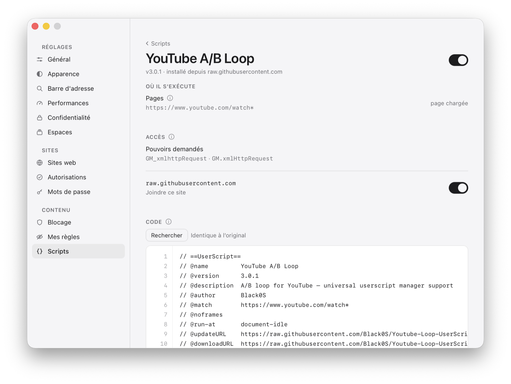

WujiDéveloppeurs
Développeurs
Des outils de développement dans la fenêtre et dans le style de Wuji, et des scripts qui tournent comme dans Chrome. Ce qu'ils ne savent pas faire est écrit aussi.
Les outils de développement




Dans la fenêtre
⌥⌘I, ou « Inspecter l'élément » au clic droit. Le panneau se pose par-dessus le bas de la page sans la redimensionner, suit l'onglet qu'on regarde, et se détache dans une fenêtre à lui.
Éléments
L'arbre du document, tenu à jour ; la recherche par sélecteur, texte, balise ou attribut ; le fil d'Ariane. Le survol surligne marge, bordure, remplissage et contenu. Les flèches se promènent dans l'arbre, ← remonte au parent sans rien replier.
Éditer en place
Un double-clic ouvre la ligne en couleurs : le nœud entier s'il est petit, sa balise ouvrante s'il est grand. ⌘S enregistre, échap renonce — et l'élément est accordé sur place, pas recréé.
Styles, calculé, boîte, écouteurs
Les règles telles qu'elles sont écrites — celles d'une feuille d'un autre site comprises —, les valeurs calculées, la boîte, et les écouteurs de l'élément et de ses ancêtres avec leur fichier et leur ligne.
Console
Ce que la page écrit, ses erreurs avec leur pile, des objets qu'on déplie, console.table en tableau, $0 pour l'élément choisi, et une ligne pour évaluer dans la page — ou dans un cadre.
Sources
Scripts et feuilles, mis en forme et colorés, sur tout le fichier : un script de 3,6 Mo se lit en entier, avec la recherche et le retour à la ligne.
Réseau
Chaque ressource, son état, son poids, son temps et sa chronologie ; méthode et en-têtes pour fetch et XMLHttpRequest ; recharger sans le cache.
Stockage
Cookies — HttpOnly compris —, qui s'écrivent et se modifient ; stockage local et de session ; bases IndexedDB et leurs tables ; Cache Storage et service workers.
Ce qui précède l'ouverture
Les trois cents derniers messages, les trois cents dernières requêtes et tous les écouteurs sont gardés avant qu'on ouvre le panneau — moins d'une microseconde par écouteur.
Des cadres, même d'un autre site
Un <iframe> se déplie dans l'arbre ; un élément choisi dans un cadre y emmène la console.
Son site en direct
On écrit son site dans son éditeur, on le regarde dans Wuji — et il se recharge à chaque enregistrement, sans serveur de développement.
Depuis le disque
file:///Users/…/index.html tapé dans la barre, ou le chemin que copie l'éditeur — /Users/…, ~/…. « Ouvrir avec » du Finder propose Wuji pour une page HTML.
À chaque enregistrement
La page, sa feuille de style, son script, une image : quand un fichier du projet change, ses onglets se rechargent — une fois par enregistrement, sans rien injecter dans la page ni ouvrir de port.
Le dossier du projet
Une page de pages/naviguer/ trouve sa feuille dans ../../styles/ : Wuji ouvre l'accès au projet — le dossier qui porte .git, .vscode ou package.json —, jamais au dossier personnel ni au reste du disque.
Les liens comme sur un serveur
Un lien vers un dossier ouvre son index.html. Ce qui n'est pas le site — .git, .DS_Store, les fichiers de travail de l'éditeur — ne recharge rien.
Le mode appareil
Un téléphone dans la fenêtre
iPhone 16 Pro Max, 16 et SE, Pixel 9, Galaxy S24, iPad mini, iPad et iPad Pro 13, ou une taille sur mesure, pivotables. La page est mise en page à la largeur de l'appareil et reçoit l'identité de son navigateur.
La souris devient un doigt
maxTouchPoints, ontouchstart, les évènements touchstart et touchend, un curseur rond. Un écran plus grand que la place est réduit, et le panneau dit de combien.
Scripts utilisateur


Installer
Depuis une adresse en .user.js — la convention de Greasemonkey — ou depuis une page qui se révèle être un script. La portée s'affiche avant d'accepter ; la mise à jour se fait à la demande.
Écrire
Un éditeur coloré, dans Réglages › Scripts, pour les écrire ou les retoucher.
Une fois par document
Un script tourne une fois, et suit lui-même les changements de page — le contrat de Tampermonkey. Sur YouTube, qui change de vidéo sans recharger, il est posé en arrivant sur la page qu'il vise, jamais deux fois.
Rien quand rien ne tourne
Sans script actif, rien n'est posé dans les pages. L'icône reste dans la barre, pâle quand rien ne tourne ici.
Ce que les outils ne savent pas faire
- Pas de points d'arrêt, pas de pas à pas. C'est le travail d'un débogueur, que WebKit ne prête pas à une application.
- En mode appareil,
@media (pointer: coarse)ne change pas : WebKit le tire du matériel. - Une feuille qu'un site refuse même à la requête de la page, et que l'archive n'a pas gardée, reste illisible — et c'est écrit.